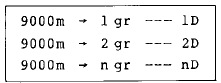
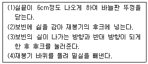
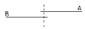

신발류제조기능사 (2003-10-05 기출문제)
1과목: 신발류제조공정
1. 케미화류 제조설비를 나열하였다. 이중 케미화류에 사용되는 제조설비가 아닌 것은?
- 토우라스트
- 힐리스트
- 각종압착기
- 신골
(정답률: 알수없음)

2. 다음 신발중 재료에 따라 분류한 것이 아닌 것은?
- 혁제 운동화
- 총고무화
- 포화
- 안전화
(정답률: 알수없음)
3. 천연꼬임(Natural Twist)은 다음 어느 섬유의 독특한 물리적 구조인가?
- 면
- 마
- 모
- 견
(정답률: 알수없음)
4. 영국식 신발 치수법에서 길이 치수는 매 호마다 얼마의 간격으로 구성되는가?
- 1/2 인치
- 1/3 인치
- 1/4 인치
- 1/5 인치
(정답률: 알수없음)
5. 접착제의 사용상 주의할 점이 아닌 것은?
- 사용하지 않을 때는 가능한한 밀폐 보관한다
- 통풍이 잘 되는 장소에 보관한다
- 가능한 한 습기가 많은 곳에 보관한다
- 열원으로 부터 떨어져 보관한다
(정답률: 알수없음)
6. 한국공업규격(KS)에서는 신발의 치수를 다음의 어느 것을 기준으로 표시하는가?
- 발길이
- 발둘레
- 발길이와 볼둘레
- 발등높이
(정답률: 알수없음)
7. 재단공정에서 필요한 것이 아닌 것은?
- 장배대
- 발형
- 재단기
- 화형
(정답률: 알수없음)
8. 신발의 화형제작에 있어 표준치수를 기준으로 하여 화형의 크기, 등급을 경절하는 작업은?
- 성형
- 그레이딩
- 설계
- 기획
(정답률: 알수없음)
9. 다음 중 가장 오래전에 자연발생된 디자인의 신발로 추정되는 것은?
- 샌달
- 부츠
- 장화
- 발모랄
(정답률: 알수없음)
10. 가황고무를 물리적 또는 화학적으로 처리하여 다시 점착성과 가역성을 주어 원료고무나 미가황생지와 같은 목적에 사용할 수 있도록 한 고무는?
- TC고무
- MG고무
- 재생고무
- 우레탄고무
(정답률: 알수없음)
11. 신발의 코부분 모양을 유지시키고 보행시 부딪쳐도 발가락 부분을 보호하는 역할을 하는 부분은?
- 선포(Vamp)
- 안창(Insole)
- 선심(Toebox)
- 앞보강(Toe cap)
(정답률: 알수없음)
12. 고무 프레스 가황과정중 고무 혼합물이 가열되어 유동화되는 현상은?
- 성형
- 가소화
- 가황
- 냉각
(정답률: 알수없음)
13. 고무가공 기계중 원료고무에 소성을 부여하여 각종 배합 약품과 쉽게 혼합하는 장비는?
- 카렌다기
- 니더
- 압연기
- 사출기
(정답률: 알수없음)
14. 다음은 겉창접착 공정의 일부이다. 순서가 바른 것은?
- 선처리-접착-호칠-바핑
- 바핑-선처리-호칠-접착
- 선처리-바핑-호칠-접착
- 바핑-호칠-접착-선처리
(정답률: 알수없음)
15. 고무에 사용되는 배합약품에 속하지 않는 것은?
- 촉진제
- 접착제
- 보강제
- 노화방지제
(정답률: 알수없음)
2과목: 신발류디자인
16. 다음 중 고무창에 비하여 가죽창의 장점이 아닌 것은?
- 착화성, 보온성이 우수하다
- 내구성, 내수성이 우수하다
- 내슬립성이 일반적으로 우수하다
- 흡습성 우수하다
(정답률: 알수없음)
17. 다음의 신발제법 중 밑창의 접합에 재봉 없이 접착제를 사용하는 제법은?
- 굳이어웰트제법
- 모카신제법
- 캘리포니아제법
- 맥케이제법
(정답률: 알수없음)
18. 고무제품의 역학적 성질을 높이거나 제품의 단가를 낮추기 위해 사용하는 충전제 중 백색 충전제가 아닌 것은?
- 규산계 충전제
- 탈크(talc)
- 탄산칼슘(CaCO3)
- 카본블랙
(정답률: 알수없음)
19. 피혁의 콜라겐 단백질을 화학적으로 결합시키는 유성공정(Tanning)이 아닌 것은?
- 크롬 유성
- 동물성 유성
- 식물성 유성
- 알루미늄 유성
(정답률: 알수없음)
20. 게이지 작업시 준비하여야할 사항이 아닌 것은?
- 게이지가 틀어지지 않도록 맞추어야한다.
- 발이 움직일 정도의 여유를 주어야한다.
- 게이지는 신발에 밀착시켜 틈이 없도록 하여야한다.
- 균일한 힘을 주어야한다.
(정답률: 알수없음)
21. 데생에 대해 바르게 설명한 것은?
- 사생화에만 있고 추상화에는 없다.
- 추상화에만 있고 사생화에는 없다.
- 회화의 기초로서 모든 회화에 필요하다.
- 소묘에만 필요하고 채화에는 필요없다.
(정답률: 알수없음)
22. 무릎 아랫 쪽의 전경골근 부분에 통증이 유발되었다면 신발의 어느 쪽 설계가 잘못된 것으로 볼 수 있는가?
- 뒷(heel)부분
- 창(sole)부분
- 발등부분
- 코(toe)부분
(정답률: 알수없음)
23. 감산 혼합에서 아무리 혼색하여도 만들 수 없는 색은?
- 빨강
- 갈색
- 황토색
- 청록
(정답률: 알수없음)
24. 신발의 디자이너가 하는 일 중 가장 중요시 되는 것은?
- 시장 조사
- 아이디어(idea)의 발상
- 랜더링(rendering)
- 모델링(modeling)
(정답률: 알수없음)
25. 사람 발뼈의 명칭 중 족근골에 속하는 것은?
- 종족골
- 입방골
- 지골
- 비골
(정답률: 알수없음)
26. 신발볼을 설계함에 있어 화형(LAST)상에서 목선길이를 표시하는 것은?
- 앞날개점에서 화형볼 주름점 까지의 길이
- 두 끝점에서 굽 뒤점 까지의 길이
- 앞날개점에서 뒤끝점 까지의 길이
- 굽뒤점에서 화형볼 주름점 까지의 길이
(정답률: 알수없음)
27. 신발을 디자인한 모형을 만들려고 한다. 바른 순서는?
- 기획 - 랜더링 - 스케치 - 제작
- 기획 - 스케치 - 랜더링 - 제작
- 스케치 - 랜더링 - 기획 - 제작
- 스케치 - 기획 - 랜더링 - 제작
(정답률: 알수없음)
28. 다음 중 화형(LAST)설계 패턴의 중요 요소가 아닌 것은?
- 중심선
- 보행축
- 착지선
- 옆 장식선
(정답률: 알수없음)
29. 스포츠화의 디자인에서 최종단계라 할수 있는 것은?
- 무게
- 갑피형태
- 색채
- 밑창두께
(정답률: 알수없음)
30. 다음 중 좋은 디자인을 이루기 위한 직접적인 요소에 해당하는 것은?
- 민족성
- 사회성
- 경쟁성
- 실용성
(정답률: 알수없음)
3과목: 신발류봉재
31. 한 종류의 피봉재물을 다른 종류의 피봉재물로 뒤집어 씌워서 접은 상태로 재봉한 시임(seam)형태는?
- 랩시임(lapped seam)
- 슈우퍼임포즈시임(super imposed seam)
- 바운드시임(bound seam)
- 플래트시임(flat seam)
(정답률: 알수없음)
32. 봉제 공정분석에서 총 작업시간에 대한 순 작업시간의 비율을 무엇이라 하는가?
- 여유율
- 여유효율
- 표준률
- 작업률
(정답률: 알수없음)
33. 재봉사의 굵기를 다음과 같이 나타내고 있다. 어느 번수법인가?

- 미터식 번수
- 텍스 번수
- 영국식 번수
- 데니어 번수
(정답률: 알수없음)
34. 신발의 뒷보강(back counter)부분처럼 곡선이 진 부분을 재봉하는데 주로 쓰이는 재봉기는?
- 평1본침 재봉기
- 오버록 재봉기
- 환봉 재봉기
- 굴곡박기 재봉기
(정답률: 알수없음)
35. 신발류 제조방법 중 창(SOLE)봉합시 재봉기 또는 손으로 재봉하여 봉합하는 방법이 아닌 것은?
- 시멘트식
- 맥케이식
- 굳이어 웰트식
- 스티치다운식
(정답률: 알수없음)
36. 다음 중 신발 갑피 재봉에 가장 많이 사용하는 바늘 번수는?
- 8번
- 10번
- 12번
- 14번
(정답률: 알수없음)
37. 재봉작업의 자세에 있어, 재봉기 테이블에서 배 부분까지의 수평거리로 약 몇cm 정도 떼어앉는 것이 가장 적당한가?
- 거의 붙인다(1-3cm)
- 5cm 정도
- 10cm 정도
- 15cm 정도
(정답률: 알수없음)
38. 설포고리(베라고리)는 구멍쇠 상단부터 어느 위치에 와야 하는가?
- 첫번째와 두번째
- 두번째와 세번째
- 세번째와 네번째
- 신발에 따라 적당히
(정답률: 알수없음)
39. 재봉작업시 피재봉물이 앞으로 나가지 못 한다면 어디에 결함이 있는 것인가?
- 톱니와 노루발의 결함
- 바늘의 결함
- 보빈케이스의 결함
- 재봉사의 결함
(정답률: 알수없음)
40. 봉제의 봉목(환) 형식에서 가장 기본적인 형식은 3가지이다. 해당되지 않는 것은?
- 겹침봉(lapped stitch)
- 본봉(lock stitch)
- 단환봉(chain stitch)
- 이중환봉(double chain stitch)
(정답률: 알수없음)
41. 인조섬유 중 유기질 섬유에 속하는 것은?
- 유리섬유
- 폴리아미드
- 금속섬유
- 탄소섬유
(정답률: 알수없음)
42. 다음은 본봉 재봉기에 관한 설명이다. 옳지 않은 것은?
- 일정한 방향으로 직선 상태로 재봉된다.
- 땀의 형식은 윗실과 밑실이 서로 교차되는 형식이다.
- 윗실 한가닥으로 땀이 형성되며, 신축성이 있고 잘 풀린다.
- 가장 기본이 되는 재봉기이며 북집, 북 등이 있다.
(정답률: 알수없음)
43. 다음 중 재봉기 밑실 끼우는 순서가 올바른 것은?

- (1)-(2)-(3)-(4)
- (3)-(2)-(4)-(1)
- (4)-(2)-(3)-(1)
- (2)-(3)-(4)-(1)
(정답률: 알수없음)
44. 한장 또는 여러장의 재봉물을 연속적으로 재봉하는 방법을 무엇이라 하는가?
- 시임(seam)
- 스티치(stitch)
- 스티칭(stitching)
- 봉재(sewing)
(정답률: 알수없음)
45. 재봉된 모양이 오버록(over lock)재봉과 비슷하며 신발 갑피와 중저 부분의 연결작업시 사용되는 재봉기는?
- 지그재그 재봉기
- 보니스 재봉기
- 본봉 재봉기
- 인터록 재봉기
(정답률: 알수없음)
4과목: 신발류검사
46. 여러가지 봉제조건에 알맞도록 윗실과 밑실에게 적당한 장력을 주어 좋은 재봉이 되게끔 하는 재봉기의 부품은?
- 윗실 조절기
- 톱니
- 노루발
- 급유북
(정답률: 알수없음)
47. 아래 그림과 같이 봉합한 시임(seam)을 무엇이라고 하는 가?

- 랩시임(lapped seam)
- 바운드시임(Bound seam)
- 플래트시임(Flat seam)
- 슈퍼임포즈시임(Superimposed seam)
(정답률: 알수없음)
48. 다음 중 신발의 갑피 재봉 공정에서 많이 사용하는 봉제작업 시스템은?
- 번들 시스템(Bundle system)
- 콘베어 시스템(Conveyor system)
- 헹거 시스템(Hanger system)
- 리프트 서클 시스템(Lift circle system)
(정답률: 알수없음)
49. 다음 중 재봉기 실이 끊어지는 원인이 아닌 것은?
- 실끼우는 순서 불량
- 노루발 압력 결함
- 윗실의 조임이 강하다
- 북과 북집의 타이밍 불량
(정답률: 알수없음)
50. 다음은 실(失)의 강도(强度)에 대한 설명이다. 옳지 않은 것은?
- 실은 원료 섬유의 길이 꼬임수에 의하여 강도가 달라진다.
- 강도 측정 방법에는 결절식과 루우프 방식이 있다.
- 실의 부서지는 정도를 측정하는 것이 루우프 방식이다.
- 결절방식은 매듭을 만들어서 잡아당기는 방식 이다.
(정답률: 알수없음)
51. 구매자의 요구와 판매자의 요구 양쪽을 동시에 충족할 수 있도록 선정되어 있는 샘플링 검사는?
- 조정형
- 규준형
- 선별형
- 연속생산형
(정답률: 알수없음)
52. 신발용 접착제의 검사 항목에 속하지 않는 것은?
- 외관
- 고형분
- 점도
- 수분
(정답률: 알수없음)
53. 가죽 재단시 재단물의 검사 항목에 속하지 않는 것은?
- 색상
- 기모
- 접착
- 주름
(정답률: 알수없음)
54. 다음 중 제화 공정의 검사 항목이 아닌 것은?
- 안감(이지)부착상태
- 바핑(buffing)상태
- 접착 상태
- 성형 상태
(정답률: 알수없음)
55. 신발 완제품 검사후 개별상자에 포장하여 Carton Box에 넣는 작업은?
- 분류작업
- 적재작업
- 하조작업
- 미수작업
(정답률: 알수없음)
56. 신발제화 작업 도중 전처리제의 잘못 사용으로 접착 불량이 발생했다.피착제에 대한 전처리제의 사용이 바르게 연결된 것은?
- 합성피혁 - MEK
- 고무창 - 벤젠
- 우레탄창 - 톨루엔
- 비닐 - 한솔
(정답률: 알수없음)
57. 품질관리의 기능이 아닌 것은?
- 품질의 설계
- 품질의 보증
- 공정의 관리
- 품질의 분석
(정답률: 알수없음)
58. 신발의 품질 보증 업무에서 보증해야 할 품질 내용으로 가장 적당한 것은?
- 검사에 의한 예방
- 크레임 처리와 보상
- 품질설계와 관리서비스
- 시장 품질
(정답률: 알수없음)
59. 다음 중 화학적인 요인으로 발생하는 접착 불량이 아닌것은?
- 접착력
- 응집력
- 압력
- 용해도
(정답률: 알수없음)
60. 다음 중 수입(입고)검사 항목에 속하는 것은?
- 안감(이지) 접착상태
- 원단 수지가공 상태
- 바핑(buffing)상태
- 구목펀칭상태
(정답률: 알수없음)